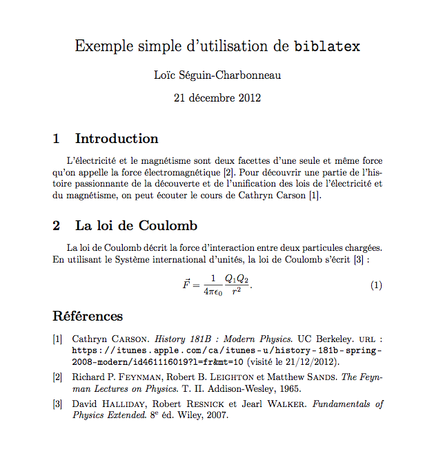
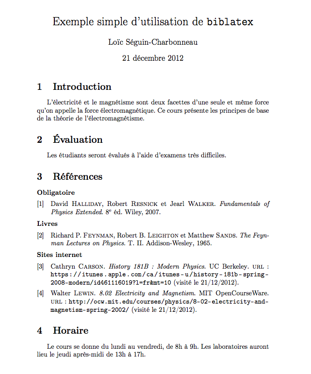

biblatex est le logiciel de gestion bibliographique moderne pour accompagner LaTeX. Combiné avec biber, il remplace complètement le système bibtex. Il est aussi possible de conserver bibtex comme engin d'arrière-plan, mais biber présente de nombreux avantages :
Biber, the default backend of biblatex, supports Ascii, 8-bit encodings, UTF-8, on-the-fly reencoding, locale-specific sorting, and many other features. Locale-specific sorting, case-sensitive sorting, and upper/lowercase precedence are controlled by the options sortlocale, sortcase, and sortupper, respectively.
(tiré du manuel d'utilisation).
Exemple simple
Pour incorporer biblatex dans un document, il suffit d'utiliser la commande \usepackage{biblatex} dans le préambule du fichier source. Puis, il faut spécifier le fichier qui contient les références bibliographiques avec \addbibresource{refs.bib}. Il est possible d'inclure plusieurs fichiers de références en ajoutant autant de \addbibresource que nécessaire. La commande \bibliography utilisée avec bibtex est aussi reconnue par biblatex pour maintenir la compatibilité, mais la nouvelle commande devrait être utilisée autant que possible. Il est important de noter que le nom complet, incluant l'extension, du fichier de référence doit être donné.
Citer une référence se fait de la même manière qu'avec bibtex, c'est-à-dire avec la commande \cite{key} où key est le nom d'une des références dans le fichier bib.
La bibliographie est incluse dans le document à l'aide de la commande \printbibliography. Voici un exemple simple d'utilisation de biblatex.
Fichier simple.tex :
\documentclass{article} \usepackage[canadien]{babel} \usepackage[utf8]{inputenc} \usepackage[T1]{fontenc} \usepackage{biblatex} % Emplacement du fichier de références. \addbibresource{em.bib} \title{Exemple simple d'utilisation de \texttt{biblatex}} \author{Loïc Séguin-Charbonneau} \begin{document} \maketitle \section{Introduction} L'électricité et le magnétisme sont deux facettes d'une seule et même force qu'on appelle la force électromagnétique \cite{feynman1965}. Pour découvrir une partie de l'histoire passionnante de la découverte et de l'unification des lois de l'électricité et du magnétisme, on peut écouter le cours de Cathryn Carson \cite{carson2008}. \section{La loi de Coulomb} La loi de Coulomb décrit la force d'interaction entre deux particules chargées. En utilisant le Système international d'unités, la loi de Coulomb s'écrit \cite{halliday2007} : \begin{equation} \vec{F} = \frac{1}{4 \pi \epsilon_0} \frac{Q_1 Q_2}{r^2}. \end{equation} \printbibliography \end{document}
Fichier em.bib :
@book{feynman1965, title = {The Feynman Lectures on Physics}, volume = {{II}}, publisher = {Addison-Wesley}, author = {Feynman, Richard P. and Leighton, Robert B. and Sands, Matthew}, year = {1965} } @book{halliday2007, edition = {8}, title = {Fundamentals of Physics Extended}, publisher = {Wiley}, author = {Halliday, David and Resnick, Robert and Walker, Jearl}, year = {2007}, } @online{carson2008, title = {History 181B: Modern Physics}, author = {Carson, Cathryn}, url = {https://itunes.apple.com/ca/itunes-u/history-181b-spring-2008-modern/id461116019?l=fr&mt=10}, organization = {UC Berkeley}, urldate = {2012-12-21}, }
Et voici le résultat :
Personalisation : inclusion de références dans un plan de cours
Lorsque je rédige des plans de cours, les références bibliographiques doivent constituer une section à part entière (avec numérotation du titre). De plus, les références ne sont en général pas citées dans le texte, elles ne sont là que pour indiquer aux étudiants les sources qu'ils peuvent consulter. Enfin, les références obligatoires doivent être clairement indiquées et j'aime bien séparer les sites internet du reste des références. Avec biblatex, il est assez simple d'ajuster la bibliographie en conséquence.
La commande \printbibliography possède de nombreuses options dont celle de spécifier le format de l'en-tête. On peut simplement donner l'option heading=bibnumbered pour que l'en-tête soit numéroté comme une section (ou un chapitre si la classe de document est un livre).
Pour inclure des références qui ne sont pas citées dans le texte il suffit d'utiliser \nocite{key}. Par exemple, si les Feynman Lectures on Physics doivent être affichées dans la bibliographie, il suffit d'ajouter \nocite{feynman1965}. Il est également possible d'inclure tous les documents du fichier bib avec l'argument * à la place d'une clé bibliographique.
L'option prenote de la commande \printbibliography permet d'ajouter du texte entre le titre et la première référence. Ce texte doit être associé à un une bibnote qui est définie à l'aide de la commande \defbibnote. Par exemple, on peut définir une note pour le manuel obligatoire
\defbibnote{obl}{\textbf{Obligatoire}}
puis la bibliographie est imprimée avec
\printbibliography[heading=bibnumbered, prenote=obl]
Le problème est que toutes les références seront imprimées alors que normalement seuls un ou deux ouvrages sont obligatoires. Il est possible d'ajouter dans le fichier bib un champ keywords et d'utiliser ce champ pour imprimer seulement certains documents. Si la référence halliday2007 est obligatoire, alors on ajoute
keywords = {mandatory}
à cet élément et on imprime la bibliographie avec
\printbibliography[heading=bibnumbered, prenote=obl, keyword=mandatory]
Les références non-obligatoires peuvent être ajoutées avec d'autres appels à la commande \printbibliography en utilisant l'option notkeyword=mandatory. Les références d'un certain type sont imprimées avec l'option type dont la valeur est un des types de documents biblatex (par exemple, book, article, online, etc.). Pour éviter d'avoir un nouvel en-tête de section à chaque appel de \printbibliography, il suffit de fournir l'option heading=none. Finalement, pour éviter que la numérotation soit dans le désordre, biblatex peut conserver l'ordre du fichier bib si on lui fournit l'option sorting=none.
Ci-dessous se trouve un exemple complet.
Fichier simple.tex :
\documentclass{article} \usepackage[canadien]{babel} \usepackage[utf8]{inputenc} \usepackage[T1]{fontenc} \usepackage[sorting=none]{biblatex} % Emplacement du fichier de références. \addbibresource{em.bib} % Notes pour différents types de références. \defbibnote{obl}{\textbf{Obligatoire}} \defbibnote{livres}{\textbf{Livres}} \defbibnote{web}{\textbf{Sites internet}} \title{Exemple simple d'utilisation de \texttt{biblatex}} \author{Loïc Séguin-Charbonneau} \begin{document} \maketitle \section{Introduction} L'électricité et le magnétisme sont deux facettes d'une seule et même force qu'on appelle la force électromagnétique. Ce cours présente les principes de base de la théorie de l'électromagnétisme. \section{Évaluation} Les étudiants seront évalués à l'aide d'examens très difficiles. \nocite{*} \printbibliography[prenote=obl, heading=bibnumbered, keyword=mandatory] \printbibliography[prenote=livres, type=book, notkeyword=mandatory, heading=none] \printbibliography[prenote=web, type=online, notkeyword=mandatory, heading=none] \section{Horaire} Le cours se donne du lundi au vendredi, de 8h à 9h. Les laboratoires auront lieu le jeudi après-midi de 13h à 17h. \end{document}
Fichier em.bib :
@book{halliday2007, edition = {8}, title = {Fundamentals of Physics Extended}, publisher = {Wiley}, author = {Halliday, David and Resnick, Robert and Walker, Jearl}, year = {2007}, keywords = {mandatory} } @book{feynman1965, title = {The Feynman Lectures on Physics}, volume = {{II}}, publisher = {Addison-Wesley}, author = {Feynman, Richard P. and Leighton, Robert B. and Sands, Matthew}, year = {1965} } @online{carson2008, title = {History 181B: Modern Physics}, author = {Carson, Cathryn}, url = {https://itunes.apple.com/ca/itunes-u/history-181b-spring-2008-modern/id461116019?l=fr&mt=10}, organization = {UC Berkeley}, urldate = {2012-12-21}, } @online{lewin2002, title = {8.02 Electricity and Magnetism}, url = {http://ocw.mit.edu/courses/physics/8-02-electricity-and-magnetism-spring-2002/}, urldate = {2012-12-21}, organization = {{MIT OpenCourseWare}}, author = {Lewin, Walter}, }
Le résultat est le suivant :
